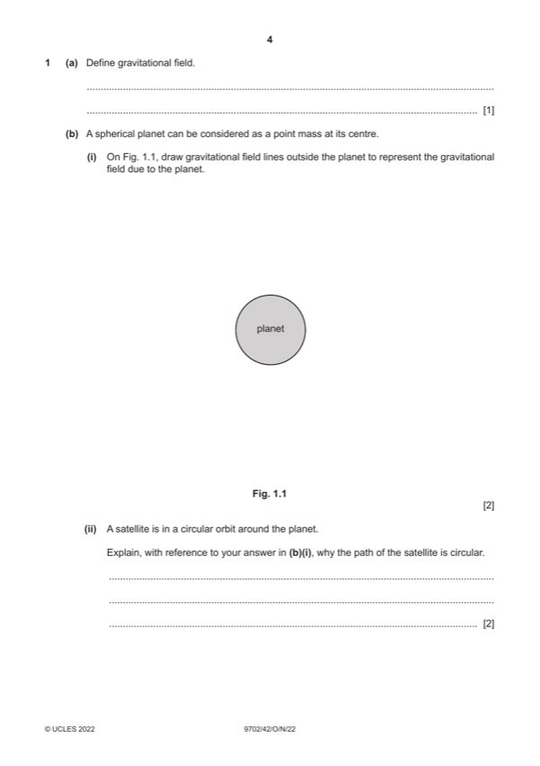

Question 1

Original paper page 4
Part 1(a) — solution
- [B1] Obtain/use: force per unit mass
Mark points
- [B1] Obtain/use: force per unit mass
Part 1(b)(i) — solution
- [B1] Obtain/use: lines drawn are radial from the surface
- [B1] Obtain/use: arrows show pointing towards planet
Mark points
- [B1] Obtain/use: lines drawn are radial from the surface
- [B1] Obtain/use: arrows show pointing towards planet
Part 1(b)(ii) — solution
- [B1] Obtain/use: field lines show force (on satellite) is towards centre of planet
- [B1] Obtain/use: (gravitational) force perpendicular to velocity causes centripetal acceleration
Mark points
- [B1] Obtain/use: field lines show force (on satellite) is towards centre of planet
- [B1] Obtain/use: (gravitational) force perpendicular to velocity causes centripetal acceleration
Part 1(c)(i) — solution
- [A1] Obtain/use: a = (42 6.4 106) / (24 60 60)2
Mark points
- [A1] Obtain/use: a = (42 6.4 106) / (24 60 60)2
Part 1(c)(ii) — solution
- [M1] Obtain/use: identification of the two forces acting on the object as gravitational force and (normal) contact force
- [A1] Obtain/use: gravitational force and normal contact force are in opposite directions, and their resultant causes the (centripetal)
Mark points
- [M1] Obtain/use: identification of the two forces acting on the object as gravitational force and (normal) contact force
- [A1] Obtain/use: gravitational force and normal contact force are in opposite directions, and their resultant causes the (centripetal)